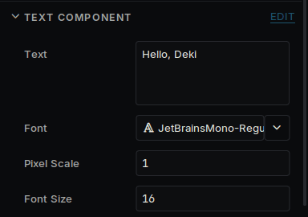
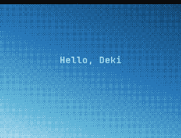
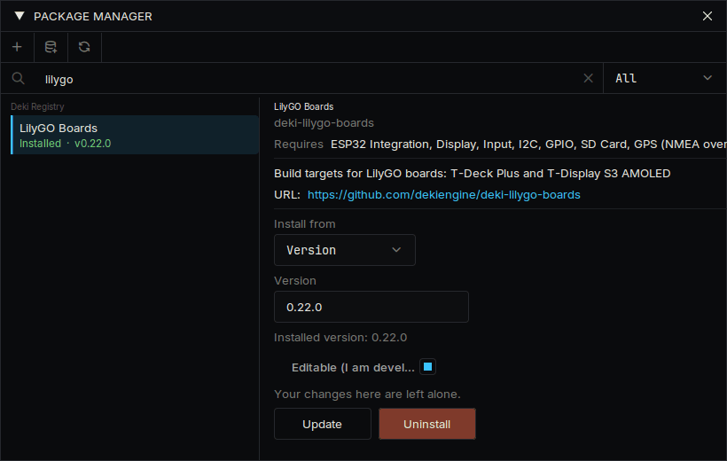

载入中...
搜索中...
未找到
快速入门
从下载编辑器到让你自己的代码在设备上运行。
安装编辑器
从最新版本下载适合你电脑的压缩包,解压到任意位置,然后运行 DekiEditor。压缩包里已经包含编译器,不需要再安装其他东西。
创建项目
选择 文件 → 新建项目...,填写项目名称和位置,目标平台保持 Desktop。设备可以以后再加,同一个项目在两者上都能运行。

新建项目对话框
第一次打开项目时,编辑器会下载并构建它的包,这需要几分钟。之后打开只需几秒。
新项目有一个场景,里面有三个对象:Camera、名为 Sky 的渐变和名为 Hello 的文本。
认识界面

标有面板编号的编辑器
| 面板 | 用途 | |
|---|---|---|
| 1 | 层级 | 场景中的对象 |
| 2 | 场景视图 | 对象的位置,可以在这里拖动 |
| 3 | 检视器 | 所选对象的组件及其数值 |
| 4 | 资源浏览器 | 你的文件,代码在 脚本 标签页中 |
| 5 | 控制台 | 来自引擎和你的代码的消息 |
对象是场景中的一个位置。它做什么由组件决定,检视器中显示的都是组件。
改点东西

检视器中的文本字段
- 在层级中选择 Hello。
- 在检视器中把 文本 改成别的内容。
- 按窗口左上角的 运行,或按 Ctrl+P。
- 按 停止,然后用 Ctrl+S 保存场景。
游戏运行时所做的更改在停止后会被丢弃。运行期间检视器会给出提示。
距离的单位是米。无论屏幕多大,摄像机从上到下都显示 15 米。请参阅 Units 和 Screens。
编写组件
在资源浏览器中打开 脚本,右键选择 创建 C++ 脚本,命名为 Bob。编辑器会创建 src/Bob.h 和 src/Bob.cpp。用任意文本编辑器打开它们,并替换其中的内容。

脚本标签页中的创建 C++ 脚本
src/Bob.h:
#pragma once
#include <deki/Engine.h>
DEKI_CATEGORY("Game")
DEKI_DESCRIPTION("Moves the object up and down.")
class Bob : public Deki::Component
{
public:
// DEKI_EXPORT shows a field in the Inspector and saves it in the scene.
DEKI_EXPORT
float distance = 3.0f;
DEKI_EXPORT
float secondsPerTrip = 2.0f;
void Start() override;
void Update() override;
private:
float m_StartY = 0.0f;
float m_Elapsed = 0.0f;
};
src/Bob.cpp:
#include "Bob.h"
#include <cmath>
void Bob::Start()
{
m_StartY = GetOwner()->GetWorldY();
}
void Bob::Update()
{
// The time since the last frame is in milliseconds.
m_Elapsed += Deki::Time::GetDeltaTimeF() * 0.001f;
const float y = m_StartY + std::sin(m_Elapsed * 6.2831853f / secondsPerTrip) * distance;
GetOwner()->SetWorldPosition(GetOwner()->GetWorldX(), y);
}
保存两个文件并回到编辑器。编辑器会发现更改并重新构建你的代码,进度和编译错误显示在 活动 面板中。
选择 Hello,按 添加组件 并选择 Bob。它的两个字段会显示在检视器中。按 运行,文本就会上下移动。改一改字段或代码,再试一次。

添加组件列表中的 Bob

检视器中 Bob 的字段

游戏运行时上下移动的文本
Awake、Start 和 Update 是组件可以接收的调用,只需声明你用到的。
放到设备上
- 打开 视图 → 包管理器,安装你的设备的包。设备 下每块受支持的设备都有自己的页面,上面写明了包名。
- 打开 构建 → 构建面板,在平台列表中选择设备。它的启动场景和设置会复制到项目的 platforms/ 文件夹中,你可以随意修改。
- 面板的 工具链 部分会显示设备的编译器是否已安装。如果显示 未安装,打开 构建 → 平台管理器...,在 工具链 中安装。下载量较大,只需一次。
- 连接设备,在 部署到 中选择它,然后按 构建并烧录;从 SD 卡加载的掌机则按 构建并安装。

包管理器中的设备包

选择了设备的构建面板
设备的第一次构建需要几分钟。你做的场景无需修改即可运行。如果是 Deki 尚未支持的设备,请参阅 Platforms。
也可以在浏览器里玩。 在平台列表中选择 Web 并按 Build & Open in Browser：游戏会构建成一个网页，并在浏览器中打开。第一次时，面板会安装网页用的编译器 Emscripten（约 2 GB）。这是同一个项目，所以在设备上能运行的，在浏览器里也能运行，网页的文件可以放到任何网站上。
接下来
- Project layout:项目文件夹里有什么
- Sprite System 和 Font System:图像和文本
- UI widgets:按钮、滑块、列表
- Making it fast 和 Memory:设备速度或内存不够时
- 首页的包列表:声音、瓦片地图、物理、无线电和传感器